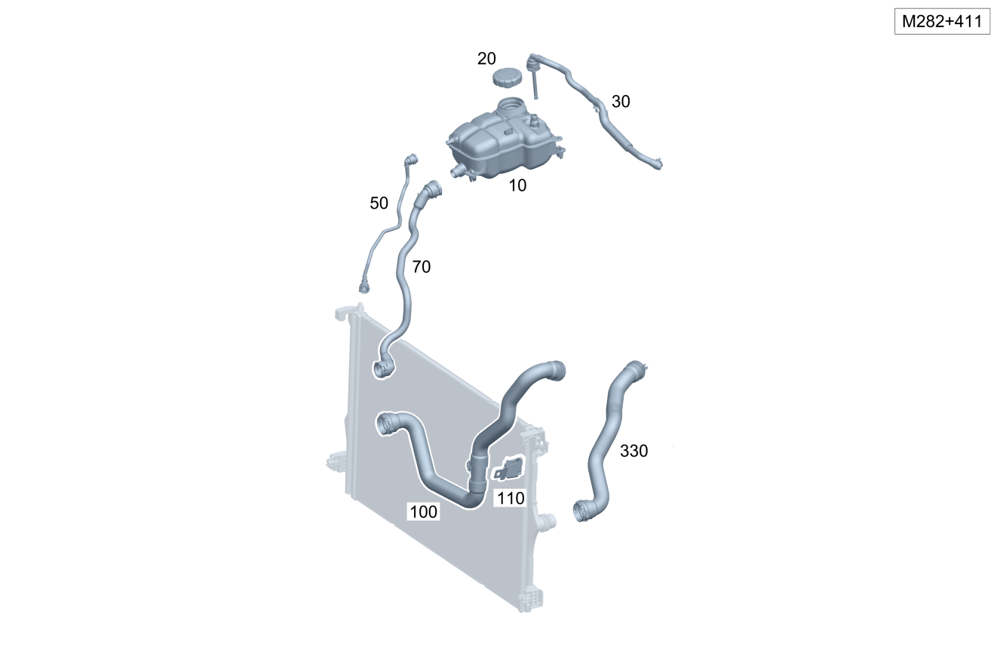

| № | Артикул | Название | Кол. | Примечание | Ограничение |
|---|---|---|---|---|---|
| 10 | A 247 500 00 49 | Расширительный бачок (EXPANSION RESERVOIR) | 1 | ||
| 20 | A 210 501 06 15 | Запорная крышка (CLOSING CAP) | 1 | Расширительный бачок системы охлаждения | |
| 30 | A 247 501 01 25 | Вентиляционный трубопр. (BLEED LINE) | 1 | Низкая температура, к расширительному бачку | M282 |
| 30 | A 247 501 21 00 | Вентиляционный трубопр. (BLEED LINE) | 1 | Низкая температура, к расширительному бачку | M282+(9U8+B01/9U8) |
| 30 | A 247 501 00 25 | Вентиляционный трубопр. (BLEED LINE) | 1 | Низкая температура, к расширительному бачку | M282+ME08 |
| 50 | A 247 501 14 00 | Вентиляционный трубопр. (BLEED LINE) | 1 | Расширительный бачок к радиатору | |
| 50 | A 177 501 72 02 | Трубопровод охлаждения (COOLANT LINE) | 1 | Расширительный бачок к радиатору | M282+B01+9U8 |
| 70 | A 177 501 61 00 | Шланг подачи ОЖ (COOLANT FILLING HOSE) | 1 | Низкая температура, расширительный бачок к радиатору | (M260/M282)+-M016 |
| 70 | A 177 501 71 02 | Трубопровод охлаждения (COOLANT LINE) | 1 | Низкая температура, расширительный бачок к радиатору | M282+B01+9U8 |
| 75 | A 000 998 32 77 | Кнопка-застежка открыта (SNAP FASTENER, OPEN) | 1 | Крепление наполняющего шланга | M282+B01+9U8 |
| 75 | A 000 998 06 07 | Кнопка-застежка (SNAP FASTENER) | 1 | Крепление наполняющего шланга; M6 | (M282/M260)+B01+9U8 |
| 100 | A 247 501 02 82 | Шланговый трубопровод (HOSE LINE) | 1 | Высокая температура, к радиатору, справа | M282+411 |
| 100 | A 247 501 10 82 | Шланг ОЖ (COOLANT HOSE) | 1 | Высокая температура, к радиатору, справа | M282+(ME08+(809/800/801/802+-052)/ME10) |
| 100 | A 177 501 64 02 | Трубопровод охлаждения (COOLANT LINE) | 1 | Высокая температура, к радиатору, справа | M282+ME08 |
| 100 | A 177 501 15 03 | Трубопровод охлаждения (COOLANT LINE) | 1 | Высокая температура, к радиатору, справа | M282+429+9U8+B01 |
| 100 | A 247 501 03 58 | Трубопровод ОЖ (COOLANT LINE) | 1 | Высокая температура, к радиатору, справа | M282+429 |
| 110 | A 177 504 07 00 | Держатель (HOLDER) | 1 | Крепление трубопроводов системы охлаждения | M282+411 |
| 110 | A 177 504 54 00 | Держатель (HOLDER) | 1 | Крепление трубопроводов системы охлаждения | M282+411 |
| 110 | A 177 504 07 00 | Держатель (HOLDER) | 1 | Крепление трубопроводов системы охлаждения | M282+(426/429) |
| 110 | A 177 504 54 00 | Держатель (HOLDER) | 1 | Крепление трубопроводов системы охлаждения | M282+(426/429) |
| 250 | A 000 500 36 00 | COOLANT PUMP | 1 | Низкотемпературн. [697] ДЕТАЛЬ ПОСТАВЛЯЕТСЯ ТОЛЬКО/ИЛИ ТАКЖЕ КАК ЗАП.ЧАСТЬ | 426/429 |
| 260 | A 177 504 44 00 | Держатель (HOLDER) | 1 | Насос омывателя | M282+B01+9U8 |
| 260 | A 177 504 43 00 | Держатель (HOLDER) | 1 | Насос омывателя | M282+9U8+B01 |
| 260 | A 247 504 00 40 | Держатель (HOLDER) | 1 | Насос омывателя | (M282/M608)+429 |
| 260 | A 247 504 00 40 | Держатель (HOLDER) | 1 | Насос омывателя | M282+429 |
| 270 | N 000000 000276 | Винт с 6-гр. глвк (HEXALOBULAR SCREW) | 3 | Крепление кронштейна насоса охлаждающей жидкости; M8X20 | M282+B01+9U8 |
| 270 | N 910143 006000 | Винт с 6-гр. глвк (HEXALOBULAR SCREW) | 3 | Крепление кронштейна насоса охлаждающей жидкости; M6X12 | (426/429)+-M139 |
| 280 | A 177 504 47 00 | Держатель (HOLDER) | 1 | Насос омывателя | M282+B01+9U8 |
| 280 | A 247 504 01 40 | Держатель (HOLDER) | 1 | Насос омывателя | (M282/M608)+429 |
| 280 | A 247 504 01 40 | Держатель (HOLDER) | 1 | Насос омывателя | M282+429 |
| 290 | N 910143 006000 | Винт с 6-гр. глвк (HEXALOBULAR SCREW) | 1 | Крепление насоса охлаждающей жидкости к кронштейну; M6X12 | M282+B01+9U8 |
| 290 | N 910143 006000 | Винт с 6-гр. глвк (HEXALOBULAR SCREW) | 1 | Крепление насоса охлаждающей жидкости к кронштейну; M6X12 | 426/429 |
| 310 | A 247 501 02 58 | Трубопровод ОЖ (COOLANT LINE) | 1 | К водяному насосу | (M282/M608)+429 |
| 310 | A 247 501 02 58 | Трубопровод ОЖ (COOLANT LINE) | 1 | К водяному насосу | M282+429 |
| 310 | A 177 501 61 02 | Трубопровод охлаждения (COOLANT LINE) | 1 | К водяному насосу | M282+429+9U8 |
| 330 | A 247 501 01 82 | Шланговый трубопровод (HOSE LINE) | 1 | Высокая температура, радиатор к термостату | M282 |
| 330 | A 247 501 09 82 | Шланг ОЖ (COOLANT HOSE) | 1 | Высокая температура, радиатор к термостату | M282+ME08 |
| 330 | A 177 501 48 02 | Трубопровод охлаждения (COOLANT LINE) | 1 | Высокая температура, радиатор к термостату | M282+9U8 |
| 350 | A 247 501 01 58 | Трубопровод ОЖ (COOLANT LINE) | 1 | Высокая температура, к радиатору, верхний левый | (M282/M608)+429+-M005 |
| 350 | A 247 501 01 58 | Трубопровод ОЖ (COOLANT LINE) | 1 | Высокая температура, к радиатору, верхний левый | M282+429+-M005 |
| 350 | A 177 501 60 02 | Трубопровод охлаждения (COOLANT LINE) | 1 | Высокая температура, к радиатору, верхний левый | M282+429+9U8 |
| 760 | A 177 501 12 02 | Трубопровод охлаждения (COOLANT LINE) | 1 | От радиатора (правая сторона) К соединительному трубопроводу насоса охлаждающей жидкости и двигателя | M282+B01+9U8 |
| 760 | A 177 501 74 02 | Трубопровод охлаждения (COOLANT LINE) | 1 | От радиатора (правая сторона) К соединительному трубопроводу насоса охлаждающей жидкости и двигателя | M282+B01+9U8 |
| 770 | A 000 500 35 00 | COOLANT PUMP | 1 | Низкотемпературн. | M282+B01+9U8 |
| 775 | A 177 501 18 02 | Трубопровод охлаждения (COOLANT LINE) | 1 | M282+B01+9U8 | |
| 775 | A 177 501 19 03 | Трубопровод охлаждения (COOLANT LINE) | 1 | M282+B01+9U8 | |
| 780 | A 177 501 51 02 | Трубопровод охлаждения (COOLANT LINE) | 1 | M282+B01+9U8 | |
| 785 | A 177 501 50 02 | Трубопровод охлаждения (COOLANT LINE) | 1 | M282+B01+9U8 | |
| 785 | A 177 501 21 03 | Трубопровод охлаждения (COOLANT LINE) | 1 | M282+B01+9U8 | |
| 790 | A 177 501 73 02 | Трубопровод охлаждения (COOLANT LINE) | 1 | M282+B01+9U8 | |
| 795 | N 910143 006000 | Винт с 6-гр. глвк (HEXALOBULAR SCREW) | 3 | Крепление трубопровода системы охлаждения; M6X12 | M282+B01+9U8 |
| 1800 | A 247 500 01 49 | Расширительный бачок (EXPANSION RESERVOIR) | 1 | Охлаждающая жидкость | ME08/ME10 |
| 1810 | N 000000 003477 | Гайка (NUT) | 2 | Крепление расширительного бачка; M6 | ME08/ME10 |
| 1820 | A 210 501 06 15 | Запорная крышка (CLOSING CAP) | 1 | Расширительный бачок системы охлаждения | ME08/ME10 |
| 1830 | A 177 501 29 02 | Вентиляционный трубопр. (BLEED LINE) | 1 | От расширительного бачка к разъёму | M282+(ME08/ME10) |
| 1835 | A 004 995 48 77 | Крепеж (трубо)провода (LINE FASTENER) | 1 | Крепление вентиляционной трубки | M282+(ME08/ME10) |
| 1838 | A 000 995 15 00 | Крепеж (трубо)провода (LINE FASTENER) | 1 | Крепление вентиляционной трубки | M282+ME08 |
| 1840 | A 247 501 03 30 | Вентиляционный трубопр. (BLEED LINE) | 1 | От разъёма к радиатору (левая сторона) | M282+(ME08/ME10) |
| 1850 | A 177 501 07 02 | Трубопровод охлаждения (COOLANT LINE) | 1 | M282+ME08 | |
| 1860 | A 177 501 08 02 | Трубопровод охлаждения (COOLANT LINE) | 1 | Радиатор низкотемпературного контура слева к разъему | M282+(ME08/ME10) |
| 1870 | A 177 501 06 02 | Трубопровод охлаждения (COOLANT LINE) | 1 | Радиатор низкотемпературного контура слева к разъему | M282+(ME08/ME10) |
| 1880 | A 000 905 61 02 | - Датчик температуры (TEMPERATURE SENSOR) | 1 | К трубопроводу системы охлаждения | M282+(ME08/ME10)/M282+(ME08/ME10) |
| 1890 | A 008 988 91 78 | - Скоба (CLAMP) | 1 | Датчик температуры охлаждающей жидкости | M282+(ME08/ME10) |
| 1900 | A 169 501 05 20 | Держатель (HOLDER) | 3 | Крепление трубопровода системы охлаждения | M282+(ME08/ME10) |
| 1900 | A 000 995 70 06 | Крепеж (трубо)провода (LINE FASTENER) | 3 | Крепление трубопровода системы охлаждения | M282+(ME08/ME10) |
| 1900 | A 000 995 70 06 | Крепеж (трубо)провода (LINE FASTENER) | 3 | Крепление трубопровода системы охлаждения | M282+(ME08/ME10) |
| 1910 | A 177 501 05 02 | Трубопровод охлаждения (COOLANT LINE) | 1 | M282+(ME08/ME10) | |
| 1930 | A 177 501 04 02 | Трубопровод охлаждения (COOLANT LINE) | 1 | M282+(ME08/ME10) | |
| 1940 | N 000000 004658 | Винт с 6-гр. глвк (HEXALOBULAR SCREW) | 2 | Крепление кронштейна к модулю силового электронного оборудования; M6X25 | M282+(ME08/ME10) |
| 1950 | A 177 501 63 00 | Шланг системы охлаждения (COOLANT HOSE) | 1 | От модуля силового электронного оборудования к разъёму | M282+(ME08/ME10) |
| 1960 | A 177 501 64 00 | Шланг системы охлаждения (COOLANT HOSE) | 1 | От разъёма к модулю силового электронного оборудования | M282+(ME08/ME10) |
| 2300 | A 177 501 62 02 | Трубопровод охлаждения (COOLANT LINE) | 1 | От радиатора низкотемпературного контура (правая сторона) к насосу системы охлаждения | M282+ME08 |
| 2300 | A 247 501 17 64 | Трубопровод ОЖ (COOLANT LINE) | 1 | От радиатора низкотемпературного контура (правая сторона) к насосу системы охлаждения | M282+ME08+(809/800/801/802+-052) |
| 2310 | A 169 501 05 20 | Держатель (HOLDER) | 3 | Крепление трубопровода системы охлаждения | M282+(ME08/ME10) |
| 2310 | A 000 995 70 06 | Крепеж (трубо)провода (LINE FASTENER) | 3 | Крепление трубопровода системы охлаждения | M282+(ME08/ME10) |
| 2310 | A 000 995 70 06 | Крепеж (трубо)провода (LINE FASTENER) | 3 | Крепление трубопровода системы охлаждения | M282+(ME08/ME10) |
| 2320 | A 000 506 14 00 | Переключающий клапан (SWITCHOVER VALVE) | 1 | Спереди справа | M282+(ME08/ME10) |
| 2325 | A 000 906 13 13 | - Исполнительный элемент (ACTUATOR COMPONENT) | 1 | M282+(ME08/ME10) | |
| 2326 | N 000000 008341 | - Винт со сфероцил. головой (FILLISTER HEAD SCREW) | 3 | Исполнительный элемент | M282+(ME08/ME10) |
| 2330 | N 000000 003477 | Гайка (NUT) | 2 | Крепление переключающего клапана; M6 | M282+(ME08/ME10) |
| 2340 | A 247 501 10 64 | Трубопровод ОЖ (COOLANT LINE) | 1 | Между переключающим клапаном и радиатором низкотемпературного контура | M282+(ME08/ME10) |
| 2350 | A 247 501 07 64 | Трубопровод ОЖ (COOLANT LINE) | 1 | От переключающего клапана к разъему | M282+(ME08/ME10) |
| 2360 | A 177 501 85 00 | Трубопровод охлаждения (COOLANT LINE) | 1 | От переключающего клапана к разъему | M282+ME08 |
| 2360 | A 177 501 24 02 | Трубопровод охлаждения (COOLANT LINE) | 1 | От переключающего клапана к разъему | M282+(ME08/ME10) |
| 2370 | A 177 501 23 02 | Трубопровод охлаждения (COOLANT LINE) | 1 | M282+ME08 | |
| 2370 | A 177 501 91 01 | Трубопровод охлаждения (COOLANT LINE) | 1 | M282+(ME08/ME10) | |
| 2380 | A 247 501 13 64 | Трубопровод ОЖ (COOLANT LINE) | 1 | M282+(ME08/ME10) | |
| 2390 | A 247 501 18 64 | Трубопровод ОЖ (COOLANT LINE) | 1 | К водяному насосу | M282+(ME08/ME10) |
| 2400 | A 000 500 26 86 | Насос ОЖ (COOLANT PUMP) | 1 | [697] ДЕТАЛЬ ПОСТАВЛЯЕТСЯ ТОЛЬКО/ИЛИ ТАКЖЕ КАК ЗАП.ЧАСТЬ | M282+(ME08/ME10) |
| 2405 | A 247 504 04 40 | Держатель (HOLDER) | 1 | Крепление водяного насоса | M282+(ME08/ME10) |
| 2410 | N 910143 006000 | Винт с 6-гр. глвк (HEXALOBULAR SCREW) | 2 | Крепление кронштейна насоса охлаждающей жидкости; M6X12 | M282+(ME08/ME10) |
| 2440 | A 177 501 63 01 | Трубопровод охлаждения (COOLANT LINE) | 1 | От расширительного бачка к разъёму | M282+ME08 |
| 2440 | A 177 501 25 02 | Трубопровод охлаждения (COOLANT LINE) | 1 | От расширительного бачка к разъёму | M282+ME08 |
| 2440 | A 177 501 45 02 | Трубопровод охлаждения (COOLANT LINE) | 1 | От расширительного бачка к разъёму | M282+(ME08/ME10) |
| 2450 | N 000000 003477 | Гайка (NUT) | 3 | Крепление трубопровода системы охлаждения; M6 | M282+(ME08/ME10) |
| 2460 | A 282 016 22 00 | Держатель (HOLDER) | 1 | Насос низкотемпературного контура | M282+ME08 |
| 2460 | A 282 016 22 00 | Держатель (HOLDER) | 1 | Насос низкотемпературного контура | M282+ME08 |
| 2470 | N 910143 008011 | Винт с 6-гр. глвк (HEXALOBULAR SCREW) | 1 | Крепление держателя; M8X90 | M282+ME08 |
| 2480 | N 910143 008019 | Винт с 6-гр. глвк (HEXALOBULAR SCREW) | 2 | Крепление держателя; M8X60 | M282+ME08 |
| 2500 | A 177 501 62 01 | Трубопровод охлаждения (COOLANT LINE) | 1 | M282+ME08 | |
| 2500 | A 177 501 26 02 | Трубопровод охлаждения (COOLANT LINE) | 1 | M282+(ME08/ME10) | |
| 2520 | A 177 501 62 00 | Трубопровод охлаждения (COOLANT LINE) | 1 | От высоковольтной аккумуляторной батареи к разъёму | M282+(ME08/ME10) |
| 2520 | A 177 501 62 00 | Трубопровод охлаждения (COOLANT LINE) | 1 | От высоковольтной аккумуляторной батареи к разъёму | M282+(ME08/ME10) |
| 2530 | A 177 501 03 02 | Трубопровод охлаждения (COOLANT LINE) | 1 | M282+ME08 | |
| 2540 | A 000 990 43 62 | Пластмассовая гайка (PLASTIC NUT) | 1 | Крепление трубопровода системы охлаждения | M282+(ME08/ME10) |
| 2550 | A 253 501 42 00 | Держатель (HOLDER) | 1 | ME08/ME10 | |
| 2560 | N 000000 003477 | Гайка (NUT) | 2 | Крепление держателя; M6 | ME08/ME10 |
| 2580 | A 247 501 11 64 | Трубопровод ОЖ (COOLANT LINE) | 1 | От зарядного устройства аккумуляторной батареи к разъёму | M282+ME08 |
| 2590 | A 247 501 14 64 | Трубопровод ОЖ (COOLANT LINE) | 1 | От разъёма к зарядному устройству аккумуляторной батареи | M282+ME08 |
| 2600 | A 000 500 38 00 | COOLANT PUMP | 1 | [697] ДЕТАЛЬ ПОСТАВЛЯЕТСЯ ТОЛЬКО/ИЛИ ТАКЖЕ КАК ЗАП.ЧАСТЬ | M282+(ME08/ME10) |
| 2600 | A 000 500 39 01 | Насос системы охлаждения (COOLANT PUMP) | 1 | [697] ДЕТАЛЬ ПОСТАВЛЯЕТСЯ ТОЛЬКО/ИЛИ ТАКЖЕ КАК ЗАП.ЧАСТЬ | M282+(ME08/ME10) |
| 2600 | A 000 500 38 00 | COOLANT PUMP | 1 | [697] ДЕТАЛЬ ПОСТАВЛЯЕТСЯ ТОЛЬКО/ИЛИ ТАКЖЕ КАК ЗАП.ЧАСТЬ | M282+(ME08/ME10) |
| 2610 | A 247 504 01 00 | Держатель (HOLDER) | 1 | Насос омывателя | M282+(ME08/ME10) |
| 2620 | N 000000 003477 | Гайка (NUT) | 2 | Крепление кронштейна насоса охлаждающей жидкости; M6 | M282+(ME08/ME10) |
| 2630 | A 247 504 02 00 | Держатель (HOLDER) | 1 | Крепление насоса охлаждающей жидкости к кронштейну | M282+(ME08/ME10) |
| 2640 | N 910143 006000 | Винт с 6-гр. глвк (HEXALOBULAR SCREW) | 1 | Крепление кронштейна к держателю; M6X12 | M282+(ME08/ME10) |
| 2650 | A 177 501 51 00 | Шланг системы охлаждения (COOLANT HOSE) | 1 | От разъема к водяному насосу | M282+(ME08/ME10) |
| 2660 | A 247 501 04 64 | Трубопровод ОЖ (COOLANT LINE) | 1 | Водяной насос к переключающему клапану | M282+ME08 |
| 2670 | A 000 905 61 02 | - Датчик температуры (TEMPERATURE SENSOR) | 1 | К трубопроводу системы охлаждения | M282+(ME08/ME10) |
| 2680 | A 000 506 13 00 | Переключающий клапан (SWITCHOVER VALVE) | 1 | Сзади справа | M282+ME08 |
| 2690 | N 000000 003477 | Гайка (NUT) | 2 | Переключающий клапан к держателю; M6 | M282+(ME08/ME10) |
| 2700 | A 177 504 37 00 | Держатель (HOLDER) | 1 | Переключающий клапан | M282+ME08 |
| 2710 | N 000000 003477 | Гайка (NUT) | 3 | Крепление держателя переключающего клапана; M6 | M282+(ME08/ME10) |
| 2730 | A 177 501 52 00 | Шланг системы охлаждения (COOLANT HOSE) | 1 | От переключающего клапана к высоковольтной аккумуляторной батарее | M282+ME08 |
Позиций: 124 · подписано на схемах: 124 · колесо — плавный зум в курсор, перетаскивание — пан, двойной клик — зум, клик по артикулу — скопировать.